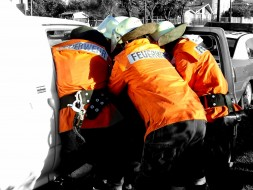
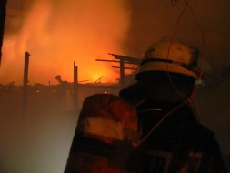
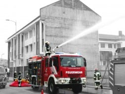
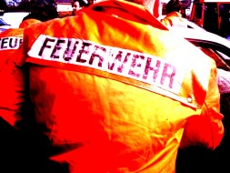

El Incendio Estructural
Nuestra compañía posee la especialidad de Incendio Estructural, para ello se cuenta con voluntarios preparados a nivel nacional e internacional en normativas vigentes según las certificaciones NFPA1001, en la cual se trabaja actualmente en conjunto con la Houston Fire Academy de los Estados Unidos a través de la Fire Foundation para lograr a cabalidad el cumplimiento y mantención de la calificación de nuestros voluntarios en la materia. Además, toda nuestra dotación está debidamente capacitada y certificada mediante los cursos normalizados de la Academia Nacional de Bomberos con sede en Santiago y en nuestra región, por cursos realizados en diversos puntos del país en materia de manejo del agua, fuego, escalas, cuerdas y material destinado a la especialidad.




El Rescate
El Cuerpo de Bomberos de Talcahuano destinó a nuestra compañía la sub-especialidad de rescate en el año 1985, debido a la visión de algunos voluntarios que se interesaron en esta materia impulsados por las necesidades de nuestra comuna, siendo unas de las compañías pioneras a nivel regional y a nivel nacional en este ámbito, ya que, nuestra ciudad que experimentó una gran expansión demográfica e industrial, la cual nos obligó a adquirir un continuo perfeccionamiento, capacitación de alto nivel y superación personal para enfrentar este nuevo desafío.
Fué asi como en sus inicios, la “Brigada de Rescate”; comenzó a operar con herramientas manuales y eléctricas que permitían realizar las labores de liberación de personas que sufrían accidentes vehiculares de manera eficiente de acuerdo a la década, para luego adquirir la primera herramienta hidráulica de procedencia alemana, marca LUKAS y con esto entregar un mejor servicio a la comunidad porteña.
Con el correr de los años, aquel espíritu de servicio, motivado por las actuaciones en rescate y la experiencia de los voluntarios, fue creciendo a la par con la implementación y capacitación, logrando dotar a la Unidad de Rescate con personal altamente preparado en materias de Manejo Básico del Trauma, Rescate Vehicular, Rescate en Alturas y Rescates no Tradicionales, llevando a la compañía a entregar un servicio de rescate integral, lo que junto a equipos de alta tecnología en vehículos y herramientas especializadas, permiten hacer frente a todos los requerimientos propios de este tipo de emergencias de manera eficiente.
Hoy, el 100% de los voluntarios activos de la Bomba Chile se encuentran debidamente capacitados nacional e internacionalmente en rescate y actualizados bajo las normativas vigentes de la Academia Nacional de Bomberos.
El cumplimiento de estos estándares avalan el desempeño profesional de la Quinta Compañía con su especialidad de rescate por más de 31años, siendo uno de los precursores nacionales y regionales de esta área.